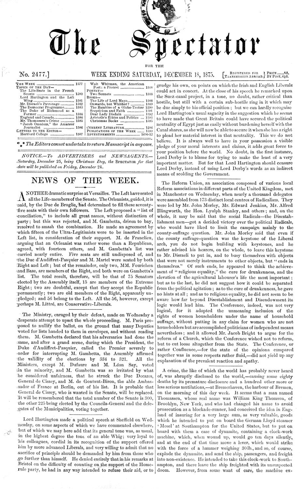
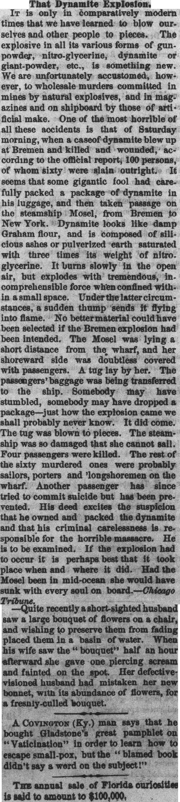

HN-233 · December 24, 1875 · Disasters, Accidents & Emergencies > Explosions, Industrial & Workplace Disasters > Explosives depots and munition blasts
Source: Jasper Republican, p. 2, reprinting the Chicago Tribune — original page; The Spectator, December 18, 1875.
Report: A tremendous dynamite explosion beside the steamer Mosel at Bremerhaven destroyed a tug and killed many people on the crowded quay. The reprinted American account speculated about an improperly packed dynamite case and suspected a passenger who tried to shoot himself. But a December 18 British report, published before the Indiana reprint, already described a much more deliberate alleged scheme: William King Thomson, using the name Thomassen, supposedly intended a timed bomb to sink the liner at sea for inflated cargo-insurance proceeds.
Assessment: Major evidence against simply accepting the newspaper's negligent-handling narrative. Contemporary reporting connected the blast to a planned insurance-fraud crime, but the precise device and perpetrator's admissions still require original investigative records. Initial death estimates differ. Follow-up partly resolved; prosecution evidence open.
Authentic images retrieved from The Spectator Archive and Hoosier State Chronicles (Indiana State Library). Article crops are located using the archive's own OCR word coordinates and rendered at native crop resolution; article clips are assembled from the archive's own article-block images; page images marked "archive tiles" are stitched from the archive's own tiled page service at its 256-px tile cap; page images marked "issue PDF" are single pages rasterised from the archive's own issue PDF, with the page chosen by matching the headline against the PDF's text layer; page scans are reduced-size access renditions. No images were generated, mocked, or retouched.


Status: Archive images acquired
Authentic archive-owned image renditions were retrieved for this record and are displayed above. The source-acquisition manifest preserves the original pre-acquisition feasibility assessment.
URL (preserved verbatim): https://newspapers.library.in.gov/?a=d&d=JPRP18751224.2.9
Saved research report: Historical_Newspaper_Event_Research_228-252_2026-10-22.md
Evidence note: A newspaper report means a historical publication made a claim; it does not establish that claim as fact. Contemporary reporting is separated from later scholarly context and our own assessment.